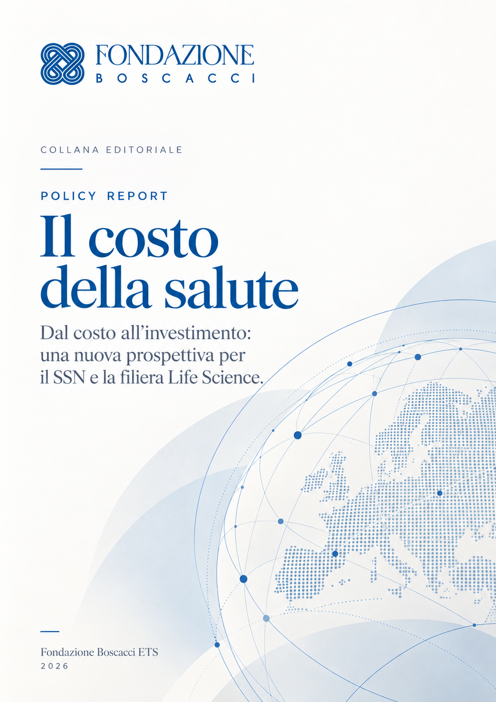
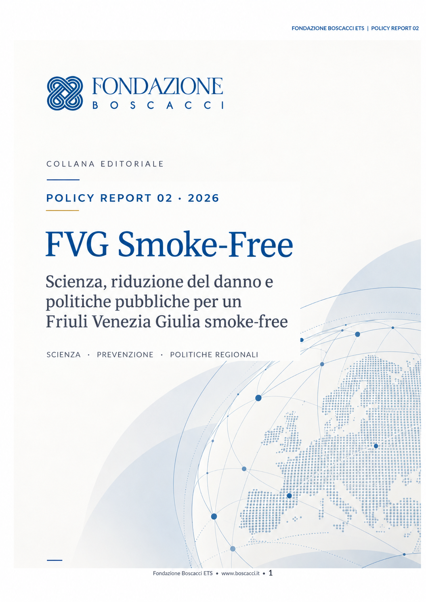
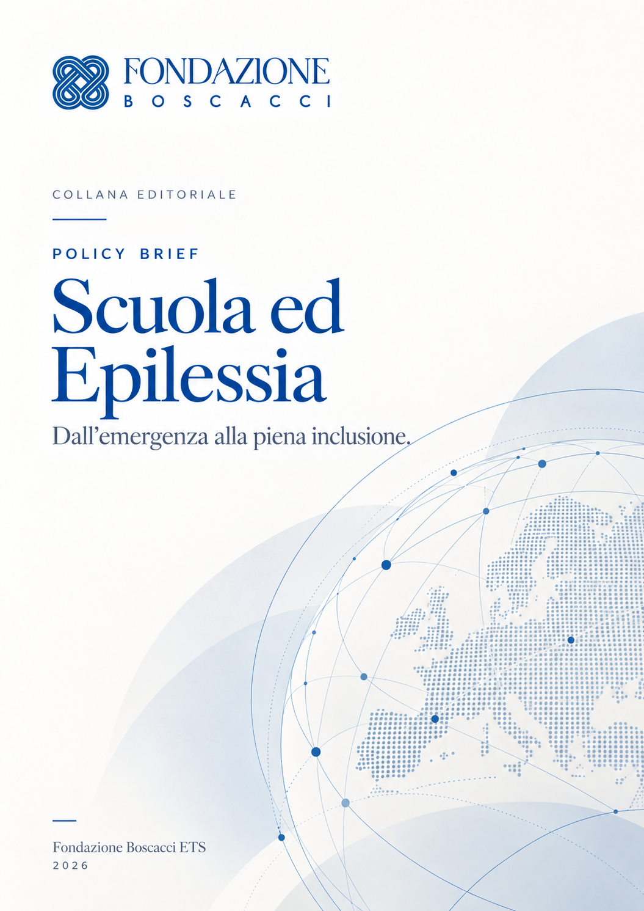
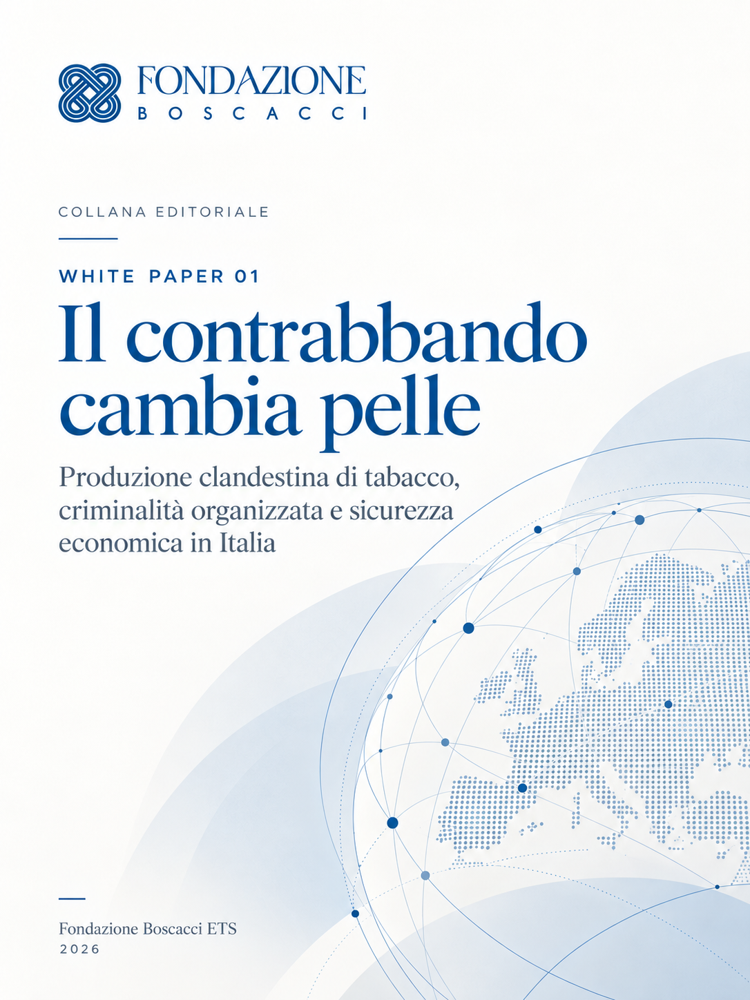
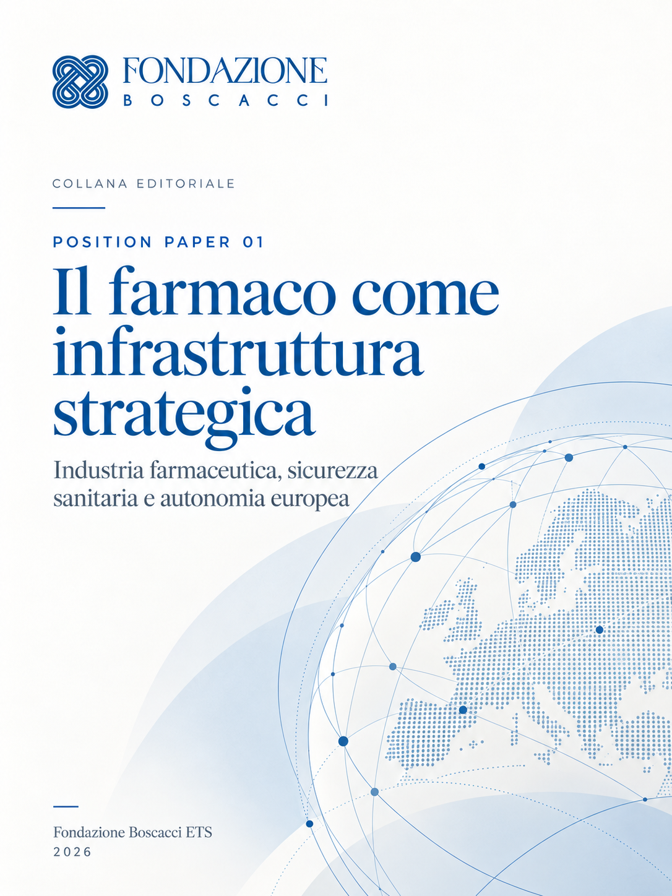

01
POLICY REPORT · 2026
Il costo della salute
Dal costo all’investimento: una nuova prospettiva per il SSN e la filiera Life Science.
Analisi, position paper, policy report, studi e contributi editoriali per alimentare un confronto informato sui principali temi di interesse pubblico.

Un volume dedicato al ruolo strategico della cultura della difesa, tra comunicazione, geopolitica e formazione.
Scopri il volume →Documenti di analisi, ricerca e approfondimento prodotti dalla Fondazione per contribuire al dibattito sui temi sanitari, istituzionali, scientifici e strategici.

Dal costo all’investimento: una nuova prospettiva per il SSN e la filiera Life Science.

Scienza, riduzione del danno e politiche pubbliche per un Friuli Venezia Giulia smoke-free.

Dall’emergenza alla piena inclusione: scuola, salute e diritto allo studio.

Produzione clandestina di tabacco, criminalità organizzata e sicurezza economica in Italia.

Il rapporto Italia–Egitto dopo la sentenza sul caso Giulio Regeni.

Industria farmaceutica, sicurezza sanitaria e autonomia europea.
Pubblicazioni, saggi e contributi realizzati nell’ambito delle attività della Fondazione o firmati dai suoi membri e pubblicati da editori e istituzioni esterne.
Comunicazione, geopolitica e formazione per l’interesse nazionale.
Scopri il volume →Formati differenti per analizzare temi complessi e contribuire al dibattito pubblico con contenuti rigorosi e indipendenti.
Analisi sintetiche e proposte operative sui principali temi di policy.
Posizioni, analisi e proposte sviluppate dalla Fondazione.
Approfondimenti scientifici, accademici e istituzionali.
Documenti di analisi e ricerca dedicati a tematiche strategiche.